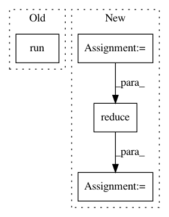

87c962eb21167aa6ab80f7dd6654b1e89deff9e1,ludwig/models/model.py,Model,batch_evaluation,#Model#Any#Any#Any#Any#Any#Any#Any#Any#Any#,919
Before Change
while not batcher.last_batch():
batch = batcher.next_batch()
result = session.run(
output_nodes,
feed_dict=self.feed_dict(
batch,
regularization_lambda=regularization_lambda,
dropout_rate=0.0,
is_training=is_training
)
)
output_stats, seq_set_size = self.update_output_stats_batch(
output_stats,
seq_set_size,
After Change
// create array for target
// is there more than one target
if len(self.hyperparameters["output_features"]) > 1:
target = reduce(lambda x, y: np.vstack((x, y)),
[batch[f["name"]] for f in
self.hyperparameters["output_features"]]).T
else:
target = batch[
self.hyperparameters["output_features"][0]["name"]]
In pattern: SUPERPATTERN
Frequency: 3
Non-data size: 4
Instances
Project Name: uber/ludwig
Commit Name: 87c962eb21167aa6ab80f7dd6654b1e89deff9e1
Time: 2020-03-01
Author: jimthompson5802@aol.com
File Name: ludwig/models/model.py
Class Name: Model
Method Name: batch_evaluation
Project Name: keras-team/autokeras
Commit Name: f4503bb3a3be014b452f54d8e2d187bb6419f627
Time: 2018-08-01
Author: jhfjhfj1@gmail.com
File Name: autokeras/classifier.py
Class Name: ImageClassifier
Method Name: predict